Agents (Experimental)
Experimental
Agents are new in 1.4.0 and have had little use with real models. Expect rough edges: tool calls a weak model gets wrong,
runs that cost more tokens than you thought, a review screen that is more work than it should be, and behaviour that changes
between versions. Your book is protected (the agent works on a copy, the result is reviewed and a backup is taken before it is
applied), but keep your own backup of a book before you take over an agent's result, set a token budget, and watch the
first runs in the
An agent is a model that works on one of your books on its own, for a long time, calling the commands
you allow it as its tools: it can read the story, check it against the lorebook and report to you. The Agents tab is
where you create them, set what each may do, start and stop their runs, talk to them in the
Start runs the agent: it works in the background, one round at a time, calling the commands you allowed and its own file tools, until it
finishes, asks you something, reaches a limit or you pause or stop it (see
The tab is there only if an administrator gave you the Agents permission (administrators always
have it, but the limits are the same as for everybody: the defaults unless they fill in the settings of their own permission, so an administrator who needs more agents, runs or room in the workspace sets it there; a changed limit reaches a run that is working when it is paused and resumed). On a phone each agent is a card with the same buttons, see
The table
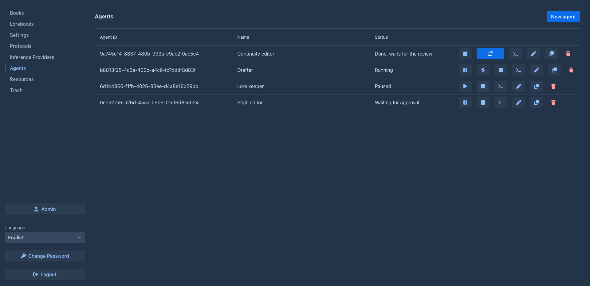
Above the table, two fields narrow the list: Name and Book show only the agents whose name, or whose book's name, contains all the words you type, in any order and whatever the case. The headers Name, Book, Status and Last run sort the table (press again to reverse; the agents that never ran come first when the last run is ascending). On a phone, a Sort by selector above the cards orders them by name, status, or the newest run first.
The buttons at the end of a row depend on the run:
Starting is refused, with the reason, when the agent is disabled, has no model, or you have all the runs you may work at once.
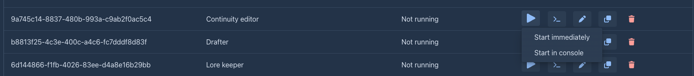
An agent has at most one run that is not over, and a book has at most one agent.
A run
A run is the job of the agent. It works in rounds: the model is asked once, it answers with text and/or calls to its tools, the results go back, and so on. Every round is saved, so a run can be paused and go on later, even after the server was restarted. The agent has the commands you allowed and these of its own:
How a run ends a stretch of work:
-
Waiting for you: the agent answered without a tool call, or asked you something. Answer it in the
console . -
Done: the agent called
finish(in a run you started immediately). A run you started in the console is a conversation: the report of the agent comes to you like a question, the run waits for your next message, and only Finish in the console (or Stop) ends it. The result of a Done run waits for yourreview . -
Paused, with the reason: the limit of rounds, the token budget or the context limit is reached, the model could not be asked (an error of the provider, your limit on the AI), or the server was restarted. Resume goes on from the last complete round, see
When the server stops . -
Failed: the runner itself broke; the reason says what.
Pause takes effect between two rounds: the model request and the calls that are going on finish first. That can take long (a slow model, a long generation), so there is Pause now: it cancels the request to the model, whose answer is thrown away, and the call that is going on, answers the calls of the round that were not made as such, and the run is Paused in a moment. What the thrown away request would have cost is lost; resume as usual. Stop does the same: it does not wait for the request or the call that is going on, they are cancelled and the run ends at once (kept or discarded as you chose).
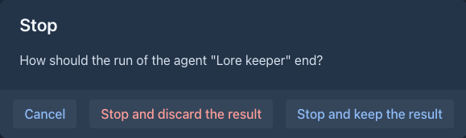
A command that is going on is told to stop, and a command that is written to be stopped (the ones that write with a model, search and replace) ends at once and leaves what it had done so far. One that can't be stopped may still finish; either way the agent is told that it is not known whether the call was done and checks the state with a read command when it goes on. The commands of the sub-agents are cancelled the same way when the run is paused, stopped or sent a message at once.
While the agent waits for a free place at its model (see
The console
Console opens a window for the latest run of the agent, with eight tabs: Run, Runs, Workspace, Checkpoints, Context, Book copy, Sub-agents and Diagnostics.
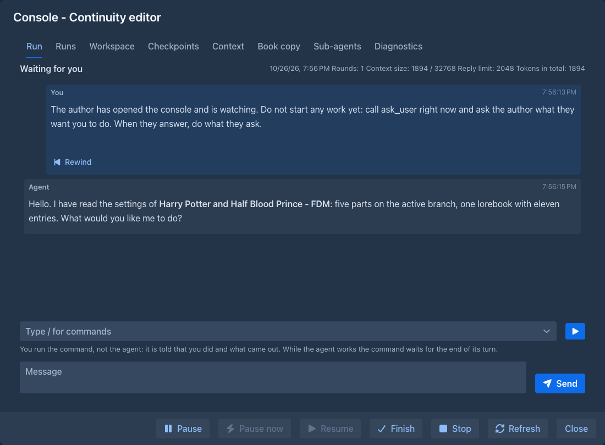
Run shows the transcript: what you told the agent, what it said (both as Markdown, so lists, headings and emphasis show as such), and every command or file tool it called, folded to one line with the arguments (click it to see them and the result, shown as plain text). When the model sends its reasoning (what it thought before it answered), a folded Reasoning block shows it before the answer, and the download has it. Whether you get any depends on the model and the server: it has to report it, and your AI has to have reasoning switched on. While a request is going on the console shows what the model has written so far (its reasoning, open so you can follow it, and its text) in a block marked Working... at the end of the transcript, above the messages that wait; it is replaced by the real blocks when the round is over. While it is shown the console reads the run twice a second, otherwise every two seconds. Only the agent itself is shown this way, not its sub-agents, and what the model writes inside a call (a long file, say) appears only when the round is over. Every message has the time it was written at the right of its first line (the time of day, with the date when it was another day; hover for the whole time), so you can tell how long the agent worked and when it stopped. The state of the run, the context (how many tokens the last request used of the limit of the model, so you see how close the run is to a pause), the rounds and tokens it used (and the token budget, when there is one) stay above it and the box for your message under it, while the transcript scrolls. What the agent waits for is in the transcript where it was written, as a bubble of its own that stays there when the run goes on:
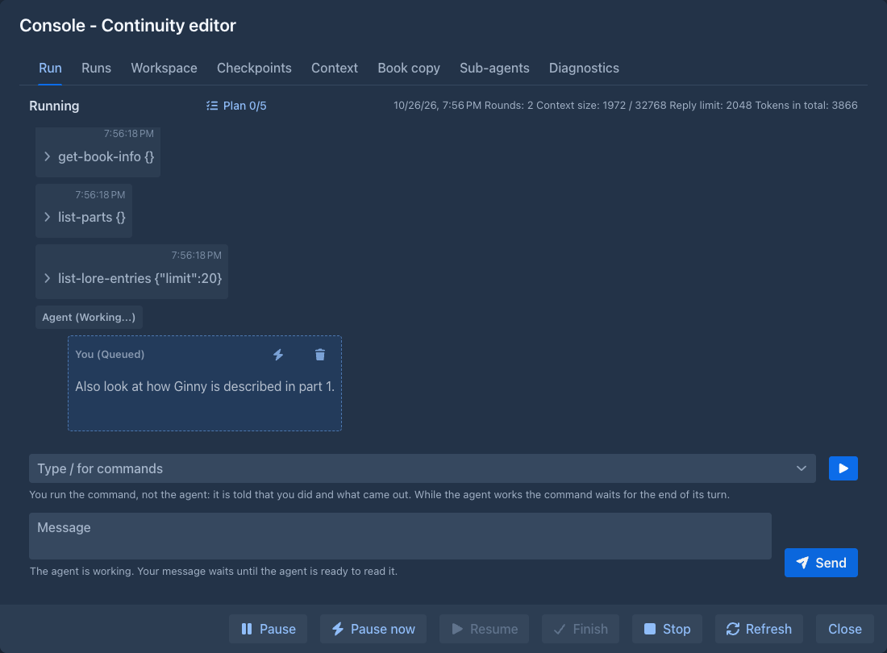
- a Question of the agent, when the run is Waiting for you; write the answer in the box and press Send (or Ctrl+Enter), and the agent goes on;
- a Report of the agent, when it called
finish.
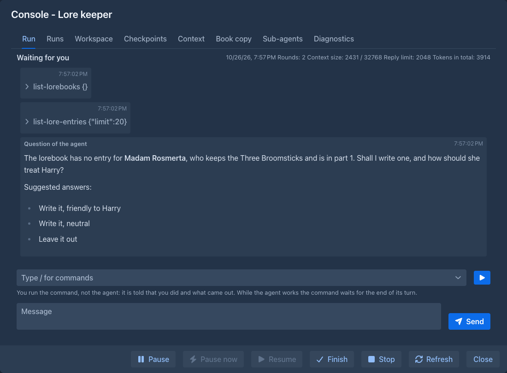
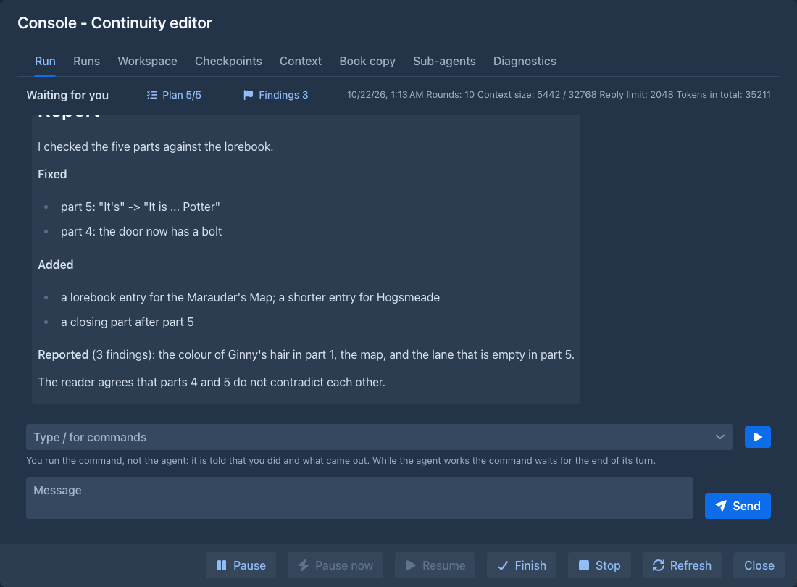
The line above the transcript shows the state of the run and its numbers: the rounds, the size of the context against its cap, the Reply limit (the most tokens the model of the agent can write in one answer; a call that needs more is cut off, so the agent writes long texts in parts) and the tokens in total. When the agent has made a plan (update_plan), a Plan button with the steps done out of all (Plan 2/5) appears there; it opens the steps in a popover, each with a mark for Done, In progress or To do. When it has reported findings (report), a Findings button with their number (Findings 3) opens them the same way, each with its severity. The findings are kept with the run, so they are there after a pause, a restart and when you look at an older run in the history; the Markdown file of a run (Download) has them in a section Findings.
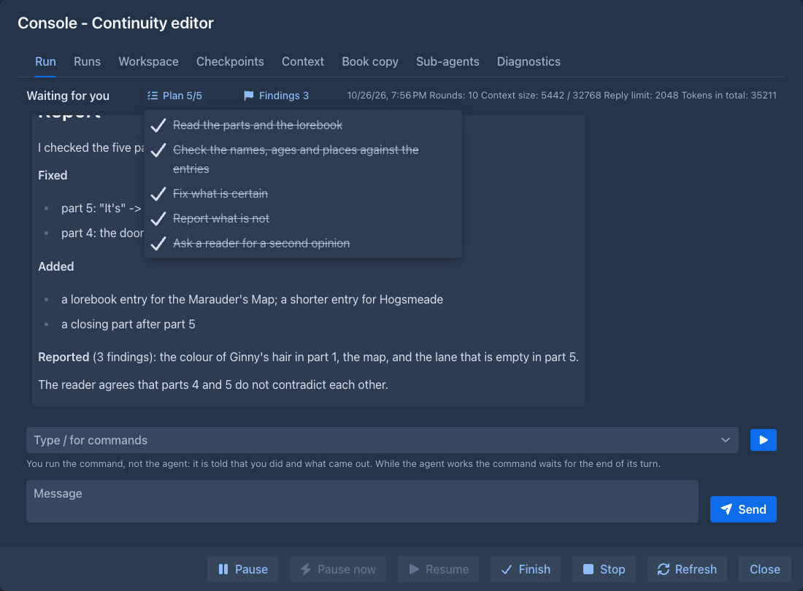
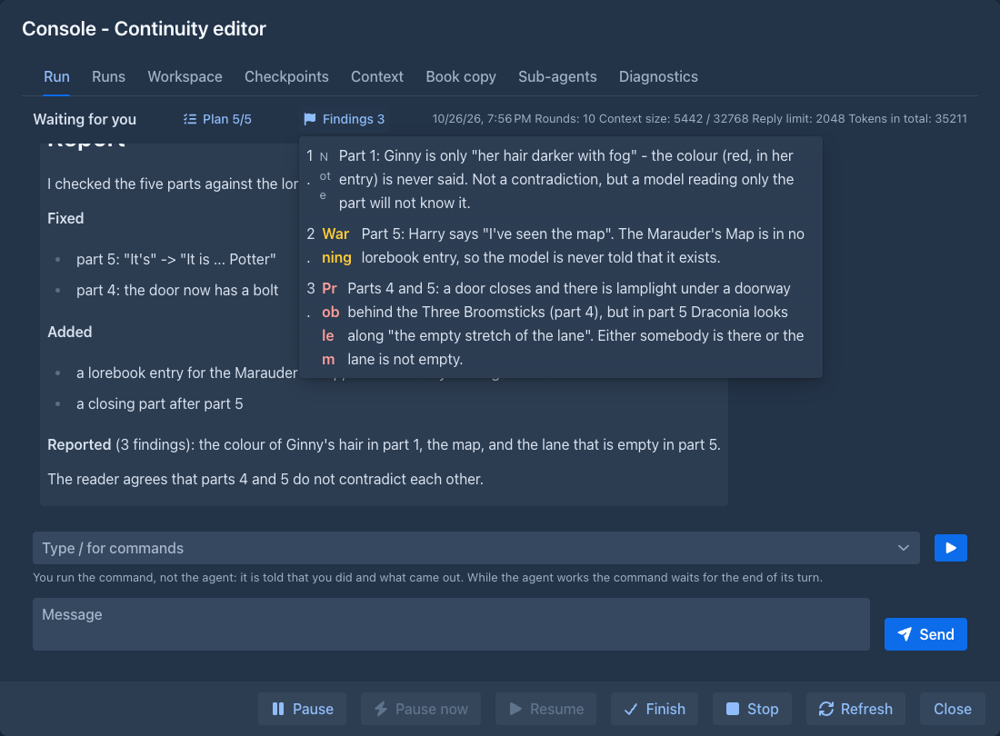
In a conversation you can also write while the agent works. The message is queued: it appears as a dashed bubble at the end of the transcript and the agent reads it as soon as the round it is in is over: the request to the model that is on its way and the calls it made finish first, and the next request already contains your message (several queued messages go together as one). When it should not wait even for that, press the small Send now (lightning) button on the bubble: the agent drops the round it is in (the request to the model is canceled, a command that waited for your approval is refused, calls that were not made are marked as skipped) and reads your message next. The trash button next to it takes the message back as long as the agent has not read it yet (the same for a queued command). Commands that already ran stay done. Queued messages and commands are kept through a restart of the server (they are read when you resume), and a run that is not a conversation (started immediately) does not take messages while it works.
Running a command yourself
Under the transcript is the command line of the application (the one of the story tab: type /, the list and the help of the command appear above it) with what you can run on the agent: /compact, /clear-workspace and the
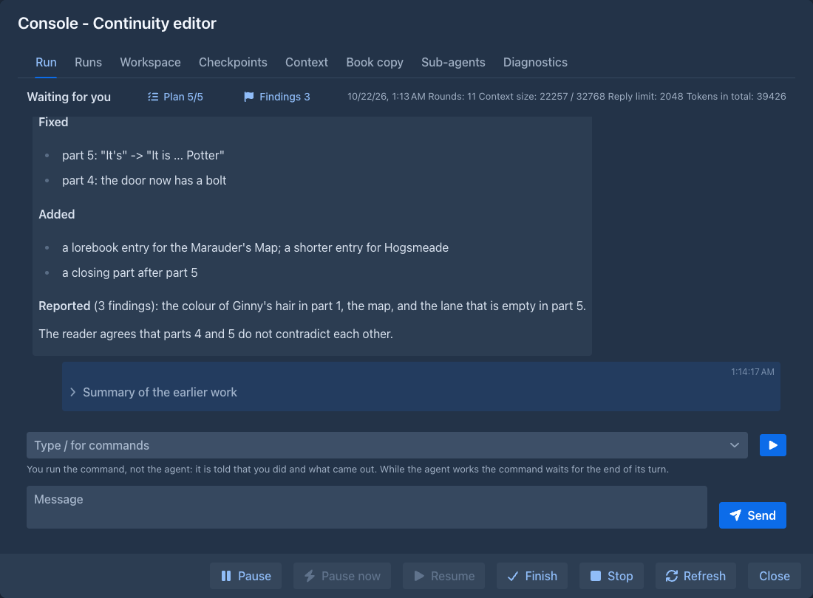
/compact [what to stress] frees the context. The agent is asked to read everything so far and write a summary (what you asked, what is done, what it found,
its notes and its plan, what it was about to do); that summary replaces everything before it in what the model reads. In the transcript you still see all of it,
and the summary as a folded block, Summary of the earlier work; the export keeps it too. The text after the command, if any, is what the summary should stress.
The request is the agent's own and its tokens count against the run. The question the agent is asked is its Compaction prompt: the one of the agent, else your
default in Settings, else the one of the administrator, else the built-in one. If the context is already so full that the request does
not fit, the oldest messages are left out of it (the summary says how many). Do it before the context is full, the usage line shows how close it is. Right after the compaction the context shown is an estimate of what the next request will hold (the summary, the system prompt and the definitions of the tools); the first answer of the model after it replaces it with the real number.
Context filling up. Once the context of the model passes 75% of its cap the agent gets a notice after every round (a message of the run, you see it in the
transcript): how full it is, and that it should save what it must not lose to a file of its workspace, update its plan and call request_compaction. Above 90% the notice says that the run
stops when the context is full. If the agent does not compact before the context passes the Compact at share of its definition (90% unless you say otherwise), the run does it by itself: the same compaction, the summary begins "compacted automatically" and the agent is not warned on top of it. A compaction that fails changes nothing, the agent is told, and the run tries again only some rounds later. The compaction the agent asks for is the same as yours (its Compaction prompt, see
A call the model server could not read. When a model writes a long text inside a call, its answer can end in the middle of the text (the limit of one answer, the reply tokens of the protocol or the max completion tokens of the AI, is reached, a server default applies when neither is set, or the model simply stops; the context, however full, is a different limit), and the server refuses the incomplete call ("Failed to parse tool call arguments as JSON"). Asking again with the same conversation would make the same mistake, so the run does not just pause: the agent is told in the transcript that its last answer could not be used and that nothing was done, and to write long text to a file of its workspace in several smaller steps; then it is asked again, up to three times in a row. If it keeps failing the run pauses, and what it was told stays in the transcript, so a Resume asks a different question than the one that failed. The same goes for a sub-agent.
A call that was cut off but reached the application (the call result says "not valid JSON ... cut off in the middle") stays in the transcript as the model wrote it, so you can read it, but it is sent back to the model with empty arguments: a server that reads the earlier calls again would otherwise refuse every following request, and the run could not go on without a rewind.
Runaway calls. A model can fall into a loop and write the same call hundreds of times in one answer; the results would fill the context before the next request. The run makes at most 32 calls of an answer, and a repeat of a call that only reads (the same tool with the same arguments, in the same answer) is made once. The calls that are left out are not in the transcript, and the agent gets a notice that says so.
Going in circles. A model can also repeat itself over many answers: the same look-up (listing files, listing lorebooks...) with the same result, round after round, without getting anywhere. The run watches for that. When the agent makes rounds that only look, change nothing and are the same as earlier ones (same calls, same results), it is told at the third that nothing has changed. If it goes on, at the fifth its tools are taken away for one request: it has to answer in plain text what it was doing and what blocks it, and the run pauses with that answer as the last message, so you see why it was stuck instead of paying for another hundred rounds. Resume (or write to it) gives the tools back and starts counting afresh. A round in which something changed, or while sub-agents are working, is not counted. A sub-agent that repeats itself is stopped the same way, and what it said is its answer to the agent that started it.
/clear-workspace [what to keep] deletes the files and all the folders of the *.md or chapters/*.md, a path with spaces in double quotes
(/clear-workspace /notes.md "/my drafts" *.png). The folders above a kept file stay. If something named is not there nothing is deleted. /AGENTS.md and the checkpoints are not
part of the workspace and are never touched. The agent is told what was deleted and what was kept. In the transcript a command you ran is a bubble with the command and what it answered.
When the model of the agent sees images (see map-2.png), within the limits and rules of the workspace,
and the model is shown them with your message. Delete them in the Workspace tab when you no longer need them.
The buttons at the bottom are Pause, Resume and Stop, which do what they do in the table, and Finish, which ends a run that waits for you (its work is over, Done).
The window looks at the run every two seconds while it is open; Refresh does it at once. The Run tab shows the latest run that was not discarded, so a run that finished or failed can still be read there until the agent starts a new run; older runs are in Runs.
Runs is the history of the agent: every run it had, the latest first, with its date, status, rounds, tokens and result. Use the eye to open a run in the Run tab and read its steps and its report again (the run you open stays there until you open another one), the arrow to download its transcript as a Markdown file (what was said and when, every command with its arguments and result, the report, the conversations of the sub-agents), and the bin to delete it. A deleted run goes to the trash. A run that is going on can't be deleted, stop it first. Runs you stopped and discarded are in the list too, so you can read what they did or delete them; the Run tab shows them only when you open them.
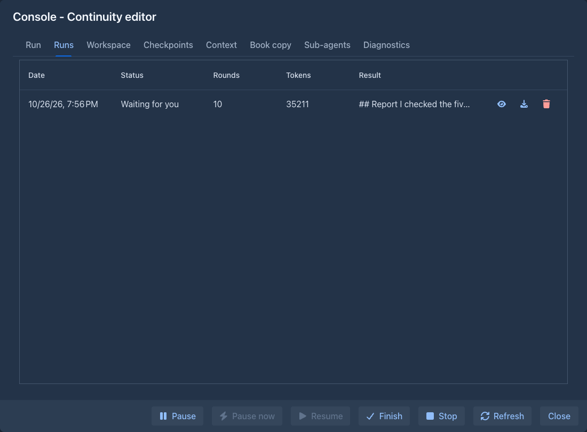
Workspace shows the files of the agent: its notes and reports, which it keeps between runs. Click a folder to go in (Up goes back), click a
text file to read it, use the arrows to download a file or the bin to delete it, and Clear deletes everything (stale notes mislead a fresh run).
New folder creates a folder in the open one and Upload file puts a file from your computer there, so you can hand the agent
a brief, a style guide or a draft. The same rules hold as for the agent's own files: names can't have \ < > : " | ? *, a trailing dot
or space, or be too long or too deep, the limits of file size and number of files apply, and an uploaded file must be text (UTF-8),
because the agent can only read text, an image (PNG, JPEG, GIF or WebP, recognised by what the file contains, not by its name;
up to 5 MB, and it counts against the total and the number of files like any file) or a zip file (up to 10 MB, kept as it is; the agent unpacks it, see AGENTS.md at the top is taken by your instructions, which the agent sees there (the file can't be written or deleted).
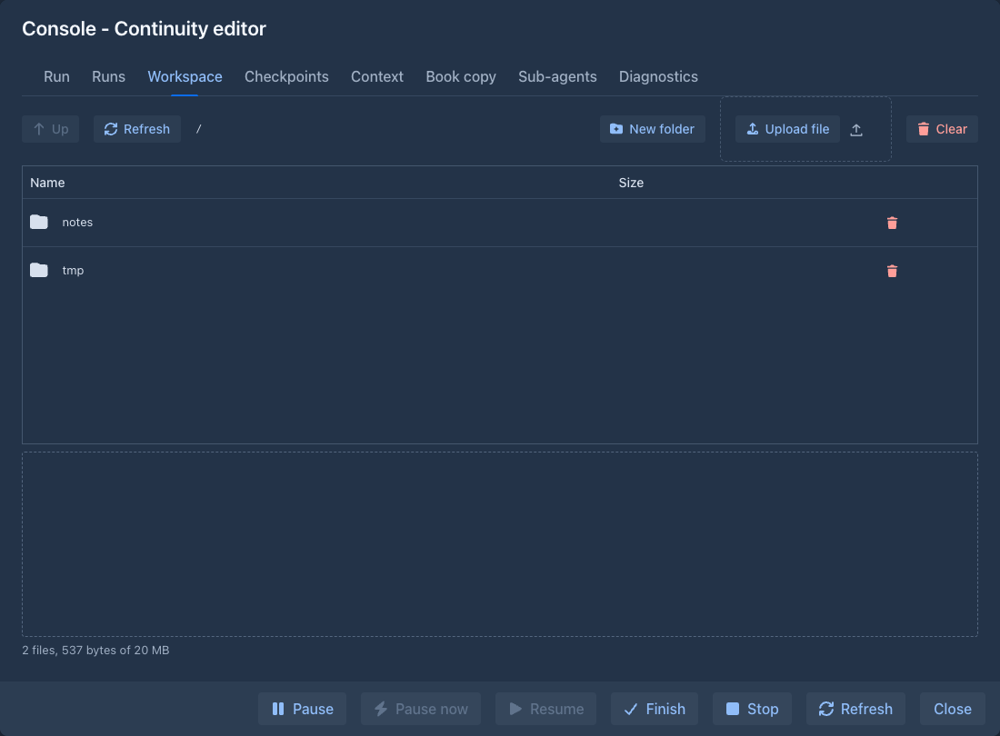
Unpacking a zip file
Upload a zip file in the Workspace tab (Upload file) when the agent should work on many files at once, for example the chapters of
a draft, and ask it to unpack it: the agent has the tool unzip_file, which unpacks /uploads/draft.zip into the new folder
/uploads/draft (or into a folder it is given; the folder must not exist yet). Unpacking is all or nothing and an archive is never trusted:
-
Only text files (UTF-8), images (PNG, JPEG, GIF, WebP) and zip files are kept. The other entries are left out and named in the answer to the agent. A zip file inside is stored, never unpacked on its own.
-
The files must fit what the workspace has room for (size, file size, number of files), or nothing is unpacked.
-
An archive with an entry that leads above the folder (
../x) or starts with/is refused whole, and so is one with the same name twice (also differing in case), a name that is both a file and a folder, more than 5 000 entries, or an encrypted or damaged one. -
A zip bomb is refused: an archive that unpacks to more than the workspace can hold, or to more than 100 times its own size.
Sub-agents
An agent can hand a job to a sub-agent: a helper with a conversation of its own that does one task and answers with a text. It has the commands and files of the agent (or of the model it runs on, see
Set Most sub-agents in the
- With one, the agent starts a sub-agent and waits (it is parked) until the sub-agent is done; the call returns its answer.
- With more, starting a sub-agent returns at once and the agent can go on, start others, look at them (
agent_status), wait for an answer (await_agent) or stop one (cancel_agent). The call that reaches the limit waits until one of them is over and returns what ended.
Rules that hold either way:
- A sub-agent reads the whole workspace but writes only in a folder of its own,
/tmp/sub1,/tmp/sub2... (it is made when the sub-agent starts, and what an earlier run left in a folder of the same name is deleted). Its answer is saved there asresult.md, so when a long answer is shown cut off, the agent reads all of it from that file. You find the files in the Workspace tab; they take part of the workspace quota and stay until you clear it. - A sub-agent runs on the main model of the agent unless the agent asks for another one, see
Models for sub-agents . - A command of a sub-agent that changes data follows the Destructive commands setting of the agent: with Ask first the same
window asks you, and that sub-agent waits for your answer (pausing the run refuses it). - A sub-agent can not start sub-agents, finish the run, ask you, or make checkpoints; it ends by answering with a text.
- Everything counts in the one budget of the run: rounds, tokens, the limits of the model. A sub-agent that hits a limit fails and says so; the agent then hits the same limit.
- How many requests are on their way to the model at once is the Requests to the model at once your administrator gave you (one when not set): with one, the agent and its sub-agent take turns.
- Calls that change the book or the workspace are done one at a time, whoever makes them, so two sub-agents never write at the same instant. Still, do not tell two of them to change the same part.
- Pausing the run pauses the sub-agents too. They stop at their next stable point (between two requests or two calls, at once when you pause at once) and what they said and did is kept with the run, so a Resume goes on where everything was: the sub-agents go on with their conversation, and a call of the agent that waited for one (
await_agent, orspawn_agentwith a limit of one) waits again, as if nothing had happened. A sub-agent that was over before the pause is still there for the agent to ask about. Stopping a run and keeping it does the same; discarding it, a restore of a checkpoint (the book the sub-agents worked in is replaced) and the agent finishing or asking you something end them for good. An agent that ends its turn while sub-agents still work is told once; if it does it again they are stopped. - Their conversations are not in the Run tab. The Sub-agents tab of the console shows them: pick one above to read what the agent told it, what it said, the commands it called with their results and how it ended (the answer it gave, or why it failed or was cancelled), in the same blocks as the transcript. It follows the run while it works, and it shows the sub-agents of an older run too (pick that run in the Runs tab first). A
spawn_agentcall in the Run tab has a Sub-agent button that opens its conversation. A conversation the agent went back over (a rewind) is greyed and marked forgotten by the agent. The download of the run (in the Runs tab) has a section for each sub-agent, with its task, its state and every message and call.
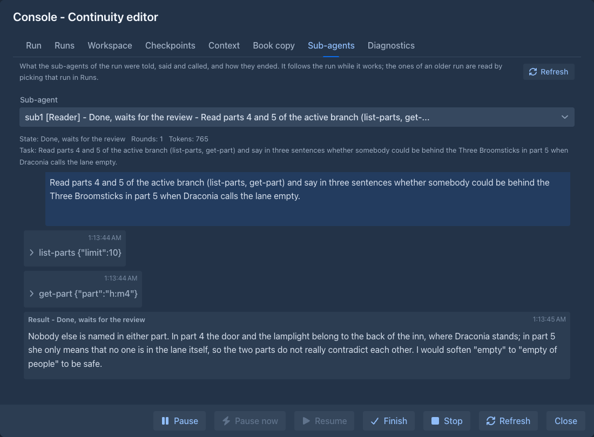
Models for sub-agents
The agent has one main model, picked at the top of the dialog. Under Models for sub-agents you can add others, for example a cheap model that only reads or a fluent one that drafts. Each has a role (its name), a description (when to use it: the agent reads it to choose), its AI and protocol, an optional context limit, and what it may use:
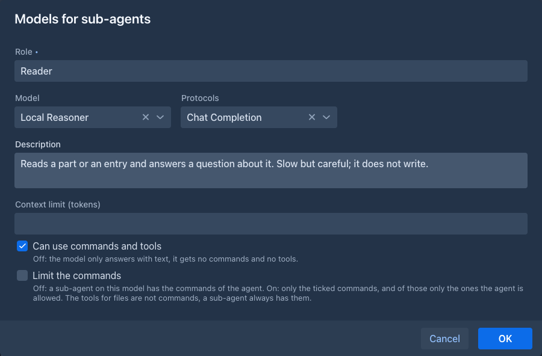
- Can use commands and tools. Off, a sub-agent on this model only answers with text: it gets no commands and no tools.
- Limit the commands. Off, a sub-agent on this model has the commands of the agent. On, only the ones you tick, and of those only the ones the agent is allowed (the allowed commands of the agent stay the upper limit). The tools for files are not commands, so every sub-agent has them. The main model has the same setting, for the sub-agents that run on it (the Edit button of its row).
The agent is told the roles, the descriptions and the commands of each model, and starts a sub-agent on one with the profile of spawn_agent; leaving it out means its own model. The checkbox Sub-agents may run on the main model (on by default) turns that last choice off: the agent must then name another model, and with none, it gets no tools for sub-agents at all. A sub-agent has the limits of its own model (how much it can read and how long its answer may be), and the Sub-agents tab and the diagnostics say which model each one ran on.
One model, several agents
A local server often has one slot (one GPU): ask it for two answers at once and both crawl or time out. Set Concurrent requests of agents in the settings of the model (1 for one slot) and the requests of your agents to it take turns, in the order they came: the others wait, their runs stay Running, and a Pause or Stop ends the wait. It counts the model requests of all the agents of all users who use that model, the commands that write with it included. It does not hold up your own writing in the story window, and that does not count against the agents either.
When you are not there
An agent that needs you, finishes or fails tells the open screens of the application (the badge on the tab, a notice). When no screen of yours is open it can also send a short message to an address you give in Settings, if an administrator gave you the permission Notifications (administrators have it) ("Message to a URL when an agent needs you"): your ntfy topic (the ntfy app on the phone shows it at once), a Gotify message URL or a Discord webhook; pick the Format the service wants. Send a test message tries it with what is in the fields. The message names the agent and says what it wants ("waits for you", "finished", "asks for the approval of the command ...", "failed", "was paused: reason") in your language. Also when the application is open sends it in any case.
The server calls the address, so an administrator can turn this off for everybody (Admin, Agents), and only addresses on the internet are called unless the administrator also ticked Allow addresses on this machine and in private networks in your permission: for a ntfy or Gotify on the same machine or on your own network ask for that. The test message says when the address is refused. Treat the address as a password when it holds a secret: anyone who knows it can read what is sent, the server never writes it to its log, redirects are not followed, and only http and https are called.
Asking you
When the agent needs you, you are told wherever you are in the app:
- a number on the Agents tab counts the agents that wait for you, and the Console button of such an agent is highlighted;
- a notice pops up with an Open button that opens the console of that agent.
The agent needs you when it asks you something or waits for your next message, asks you to approve a command, finished, failed, or was paused by itself (a limit is reached, the model could not be asked, the server was restarted). A pause you asked for does not count.
Agents work while you are away, so this does not depend on the app being open: the number is there when you log in again, and every browser window you have open gets the notice. Opening the console of the agent clears it (the other windows update).
When the agent is set to Ask first and wants a command that changes or removes data, the run stops in Waiting for approval and a window
pops up over the console with the command and its arguments. Approve lets it run, Deny tells the agent that you refused and it goes on.
Pausing or stopping the run (or stopping the server) does not count as a denial: the agent is told nothing, and when you Resume, the window comes again for the same command. The command still works on the
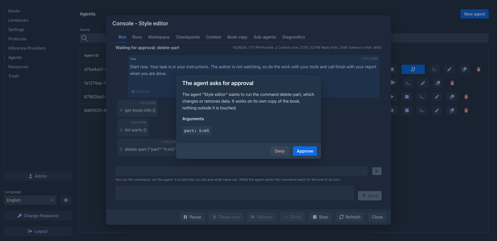
When the server stops
Stopping the server pauses the runs that work first, as Pause now does (it gives the server a few seconds): the request and the call that go on are given up, the run is Paused with the reason "The server was stopped", and a Resume goes on. If the server is killed or crashes instead, the next start pauses the runs it finds working ("Interrupted by a restart of the server"). Everything the run did is kept: the saved rounds, the copy, the workspace, and the messages and commands you had queued. What is lost is the round that was not finished. Resuming handles the call the run was in:
- A call that had not begun (it waited for your approval, or for its turn after another call) is made again, so a command that needs your approval asks you again. A call that only reads is made again too.
- A call that had begun to change something may be done in part: the agent is told its outcome is unknown and checks it with a read tool before it repeats it; the calls after it are marked as not made.
- A command of yours that was running when the server stopped goes on when the run does.
/compactand/clear-workspaceare run again; any other command that had begun is not run again (it may be done in part): the agent is told so and checks. The messages and commands that came after it are delivered as usual. - The plan of the agent and the results of its commands (
list_command_results,@result) are kept too, so the agent has them after the restart. - The calls of a sub-agent that were in the air are treated like the agent's: the ones that had not begun are made, the one that had begun is reported to it as "outcome unknown", and a sub-agent that waited for your approval asks again.
- If the server is killed (
kill -9, a power cut) while a command is running, the command dies with it; what it did is as described above.
The working copy
Every run works on a copy of your book and of its lorebooks that the app makes when the run starts: the messages, summaries, tags and settings as they are at that moment, and the lorebook with its sub-lorebooks. The copy is hidden: it is not in the lists of books and lorebooks. Whatever the agent does, it does to the copy; your book stays as it was.
When the agent has Write the book with the model of the agent on (the default), the copy also gets the model of the agent (the AI and the protocol of its main model profile) in place of the AI and the protocol of your book, every time the run starts or
is resumed. So the commands that write with a model (/next, /swipe, /regenerate, /redraft-part, /generate-annotation, the summaries) and the model commands of extensions (the Lore Generator, the Arc Outline) use the agent's model even when your book is set to another one, or to none;
a profile named in the call still wins. With the setting off they use the model of the book. This is not a change of your book: the review does not list it and applying the result leaves the AI and the protocol of your book as they are.
The copy is put into the folder of your book, so the agent writes with the settings that the folders set (language, templates, point of view, tense, style and the prompts), as the book does. The copy is not content of the folder: it is not counted there and the work in it does not change the Last modified of the folder. The copy follows the book if you move it while the run is paused. Applying the result never moves your book.
A paused run keeps its copy and works on it again when you resume it. A run that is Done, or that you stopped and kept, keeps it until you
Resuming a run
A paused or kept run does not hold the lock on your book, so you can edit the book meanwhile. When you Resume the run, its working copy catches up with what you did:
- What you changed and the agent did not (a part, a lorebook entry, a setting, a tag...) comes into the copy. A part you added comes in too and the agent can build on it; what you deleted is deleted from the copy.
- What you and the agent both changed to different texts stays as the agent has it: nothing the agent did is lost. It is a
conflict that you resolve when you review the result, with both texts in front of you. - What you changed and the agent deleted stays deleted, and what you deleted and the agent changed stays in the copy; the review shows both.
Nothing needs a click: the sync is part of resuming, and it takes a moment (a few seconds when you changed hundreds of items). The state of the copy before it is saved as an automatic get_sync_report.
A conflict does not go away by itself. Every resume compares the copy with the book again, so a conflict is reported again, and the agent is told of it again, each time you resume, until you resolve it: by changing your side of the book (to the agent's text, or back to what it was), or in the review.
A note with the resume. Resume opens a small window with a field Note for the agent (optional). What you write there is the first thing the agent reads when it goes on, after the report of the changes you made to the book. It is meant for a change of direction ("leave the lorebook alone", "start with chapter 3") and, unlike a message to a conversation, it works for every run, also one that does not wait for your messages. Leave it empty to resume as before.
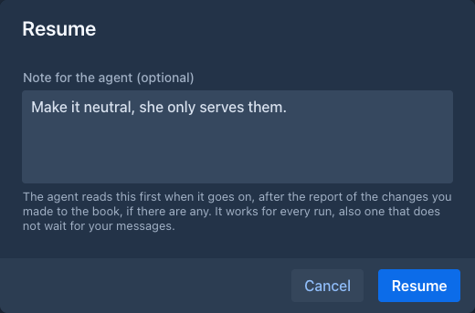
Reviewing the result
When a run is Done (or you stopped it with Stop and keep the result) the agent row and the console have a Review changes button. It opens a window with everything the agent changed, compared with your book as it is now, one line each. When the agent reported findings, they are listed above the changes (Findings (3)), so an audit that changed nothing still has something to show:
- Book: its name, description, language, point of view, tense, style and templates, its tags, and the data an extension keeps in the book (an arc outline, the character tracker).
- Part: a part whose text, instructions, scene setting, point-of-view character, present characters or summary the agent changed, a part it wrote, a part it deleted. The variables a generation keeps with a part (and the data of extensions) are taken over with it, as the field Data.
- Lorebook and Entry: a lorebook or an entry the agent made, changed (also moved, renamed, or with other tags, or other subbooks) or deleted.
- Annotation: a note on a passage of a part that the agent made, changed (the note, type, status) or deleted.
Tick the lines you want, then Apply the picked changes. The buttons above the list tick all of them, none, only new parts (the new branch the agent wrote, nothing else), only annotations or everything without conflicts. A line that needs another (a new part needs the part it follows if that is new too) brings it along when you tick it, and loses its followers when you untick it. Click a line to see it on the right: the text of your book now and the text that will be written, which you can edit before you apply. If you write nothing, the agent's text is applied.
Your book may have changed since the run started (you can edit it as soon as the run is not working). What only you changed is not in the list and stays. What both of you changed to the same thing is no change. What both changed to different texts is a conflict: it starts unticked, and when you tick it the text you see on the right replaces the text of the book. Use the book's puts the book's text into the box (the line then changes nothing for that field), Use the agent's puts the agent's back; or write the result yourself. A line that can't be taken over (the part it follows, or the lorebook it is in, was deleted from your book) says so and can't be ticked.
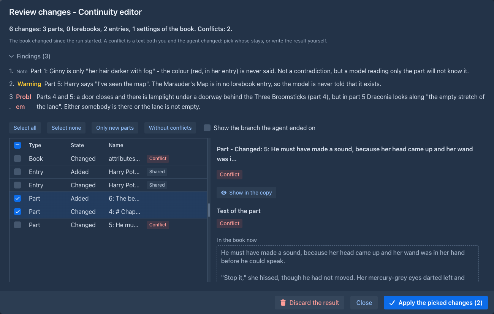
Under the texts, Differences shows what changes word by word: what is only in the book now struck through in red, what is only in the text to apply in green (it follows what you write in the box). For a conflict it also
shows what the agent changed and what you changed since the run started, each from the book as it was then, so you can see who did what. A line the agent changed in more than one thing (a part whose text and scene setting
changed, an entry with a new content and note) has a Take this change box beside each of them: untick one to apply the line without it, the book keeps its own value of that field. The place of a part in the story goes with the part and has no box,
and what the agent made or deleted is taken or left as a whole. Show in the copy (on a line the agent made or changed) opens the
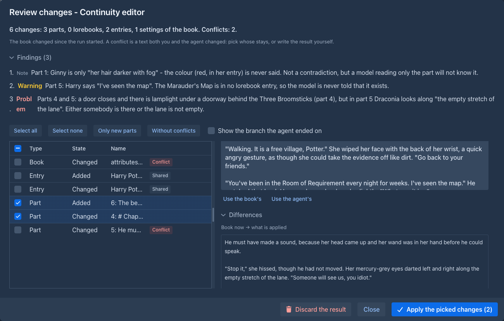
Data that extensions keep (JSON)
Extensions keep their own data in a book, in its parts, lorebooks and entries (an arc outline, the character tracker, the variables of a generation). It is JSON, and the review shows it pretty printed with the line Merge JSON data beside the text that will be applied. The data is not taken over as a whole: what only the agent changed is taken from the agent, what only your book changed stays, and what both changed in different places is put together place by place. It is a conflict only where both changed the same place to different values (the order of the keys does not matter); until you decide, the agent's version is used there.
Merge JSON data opens a window with the data of the three versions laid over each other as a tree: When the run started, In the book now, the Agent and the Result in a column each, with a mark for what changed and where (the agent, the book, both, a conflict). Only the places that changed are shown (untick Only what changed for all of them); a place is opened only when you open it, so a big document is no problem.
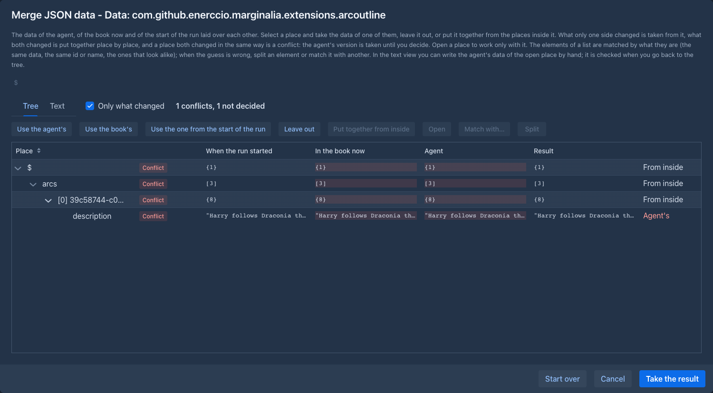
-
Select a place and take its data from one version (Use the agent's, Use the book's, Use the one from the start of the run), Leave out (the key or the element is not in the result), or Put together from inside (the places inside decide, each its own). A key or an element that only one version has is copied into the result by taking it from that version. Taking a whole object or list from one version overrules what you chose inside it, but not for good: put it together from inside again and your choices are back.
-
The elements of a list have no names, so they are matched by what they are: the same data first, then the same
uuid,idorname, then the ones that look most alike, and what is left over in the same number and of the same kind is taken as changed. When the guess is wrong, Split an element into the ones of each version, or Match with… another element that the first one has no version in common with. -
Open (or a double click) works with one place alone: the path above the tree takes you back up.
-
The Text tab shows the data of the open place as text: the agent's data you can edit, the others only to read (the book, the start of the run, the result), and Show the difference to marks what differs word by word. What you write is checked as JSON when you go back to the tree, change what is shown, open another place or take the result; if it is not valid JSON you stay where you are and are told what is wrong, and nothing is changed. Valid text replaces the agent's data in that place and everything inside it is compared again.
-
Start over forgets what you decided and wrote; Take the result hands the result to the review, where it is the text to apply (the line stays as you left it while the review is open).
The review also has Use the agent's and Use the book's for such a field, to take one of the two as it is, and Start over to go back to the put-together data.
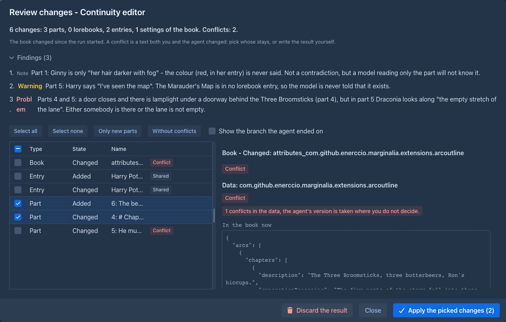
A lorebook that other books use is marked Shared: the change goes to the lorebook itself, so the other books get it too. It starts unticked.
Applying is done to the book in place: the parts keep their addresses, other books keep their links to a lorebook, and what the agent deleted goes to the trash. A backup of the book as it was is taken first (it is among the backups of the book, with its lorebooks), and the changes are made all together or not at all. Show the branch the agent ended on also switches the book to the branch the agent was on, when it is among what you applied. The summaries of parts that were edited are outdated as after an edit by hand; the agent's own summaries are taken over as they are.
When the changes are applied the run is Applied and its copy and checkpoints are deleted. Discard the result throws the copy away and leaves the book as it is. Until you do one of the two the agent has an unfinished run and can't start another.
The copy of the book
The Book copy tab shows the book the agent works on, to read: the story, one branch at a time (pick the branch above; each part with its number, the swipe it is among the others after the same part, its words, scene setting, point of view and, folded, its instructions and summary), and the lorebooks with their entries (pick one to see its content, note, tags and settings). It is not a window of your book: nothing in it can be changed, no backup is made of the copy and no extension sees a book open. It is read when you open the tab and when you press Refresh, also while the agent works, so it shows what the agent has written so far. It is there while the run has its copy (not after the result was applied or discarded).
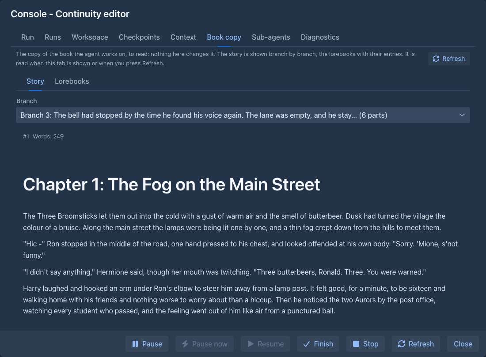
Diagnostics
The Diagnostics tab counts what the run did from its transcript, to find out what an agent needs from its tools and its prompt. It works for any run, an old one too (pick it in Runs first), and is made when you open the tab and when you press Refresh.
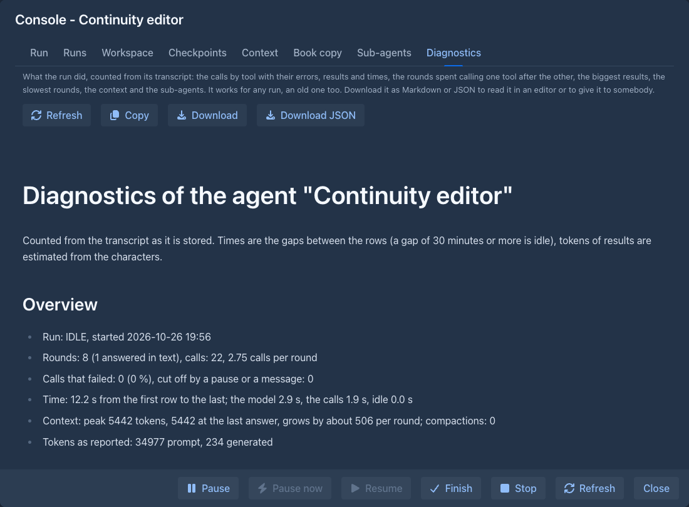
- Overview: rounds and calls, how many calls failed, the time of the model, of the calls and of pauses (a gap of 30 minutes or more between two steps is a pause, not work), the context at its peak and at the end, the tokens, compactions, your messages and the notices the runner gave the agent (an unreadable call, too many calls, a full context).
- Tools: for each tool the calls, the errors, the results that were cut, how often it was the only call of a round, the characters the agent wrote, how many calls passed a text as
@file:or@result, how many wrote a long text (300 characters or more) out and how many of those copied it from a result the agent had just been given, the tokens of its results (about, from the characters), the share of all results, the longest result and the time. - What the requests reported: recorded while the run works, so only for runs made after this was added (an older run says it has none): how long the requests waited for the first word (the server reading the prompt, so a short time means its cache was hot), how long the answers took to write and how many tokens per second, how much of the prompt the server did not read again (the cache; llama.cpp and OpenAI report it), how much of the answers was reasoning, why the answers ended (
lengthmeans the limit of one answer cut it off), the calls the model wrote that were not made (repeats, the limits, the batch policies), the time the requests waited for a place, the summaries written and what they took, and the same for each block of 25 rounds. - What the model wrote: the characters of the arguments, of the text beside the calls and of the reasoning, in all and for each block of 25 rounds with the time of the model, to see where its output goes and whether it stopped using
@fileat some point. Longest arguments shows the start of the biggest calls, with the path of a file tool. - Rounds lost to a pattern: the same tool called round after round (three or more), marked when a search came right before it; and the calls made again with the same arguments. These show where a tool that takes many items, or more calls in one answer, would save rounds.
- Errors with the arguments of the first call that got each message (to see what the model sent when a call failed), the biggest results, the slowest rounds, the compactions and the sub-agents with the tools each one called.
Download gives the report as Markdown, Download JSON as JSON, Copy puts the Markdown on the clipboard. The times are the gaps between the stored rows, so they are approximate: the time of an answer includes waiting for a free place at the model.
The context
The Context tab shows what the model reads with its next request, taken apart, so you can see where the tokens go and debug an agent that behaves oddly. It is made when you open the tab and when you press Refresh (not while the run works: it counts the tokens of every part).
- Three charts: the kinds of parts against the limit of the context (the prompt of the agent, your instructions, the notes of the runner, the tool definitions, the summary of a compaction, your messages, the answers of the agent, the results of its calls, and what is free), every part in the order it is sent (a bar for each, in the colour of its kind: a tool whose description is huge or a result that fills the context stands out), and the context at each answer of the model: a stacked bar of what it was made of (the same kinds, estimated), the size the model reported as a line and the limit as a dashed line. Where the line is above the bars, the model counted more than the estimate (images, the format of the provider); a bar that drops is a compaction or a rewind.
- A table of the parts with the kind, name, tokens and share of the context. Pick a row to read exactly the text the model is sent for that part: a section of the system message, the description and parameters of one tool, a message, the arguments of a call or the result of one.
- Download gives the whole context as one Markdown file (the system message with its sections, every tool with its description and schema, the conversation message by message, each text in a code fence), Copy puts the same text on the clipboard.
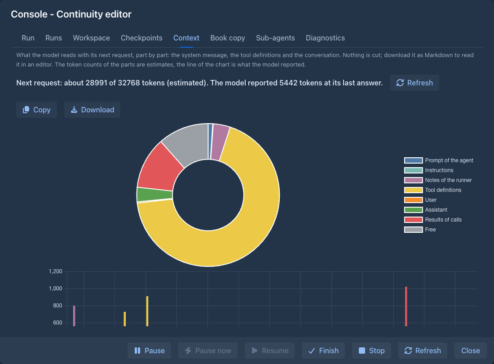
The sizes of the parts are estimates; the number the model reported is the real one (the request and its answer). In the chart of the answers the prompt, the instructions and the tools are as they are now (an older answer may have had others if you changed them), the conversation is as it was then: a summary replaced what was before it, and what a rewind went back over is gone from the answers after it (a compaction that was itself rewound is not brought back, the bars after it are a little too small). The system message and the tools are the ones the next request would use, so a change of the prompt, the instructions or the allowed commands shows at once. The messages are the transcript as stored, without what a resume adds (a "go on", the answers to calls an interruption left open). Reasoning is not part of the context (the model is not sent it back) and images show as their file names. What a compaction replaced is not in the context either; the Run tab and the Runs download still have it.
Checkpoints
A checkpoint is a restore point of the working copy of the run (the parts, summaries, lorebooks and the data of the extensions, with the handles the agent was given) and of the
workspace of the agent, so that a job that went wrong can be undone: the agent goes back with checkpoint_restore, or you do it in the Checkpoints tab of the console. Who makes them:
-
Start of the run, made when the run begins. It is never rolled out.
-
Automatic, made by the run before a round in which the agent calls something that may change the book or the workspace (a command that is not a plain read, or a file tool that writes), and only when something changed since the last checkpoint. The last five are kept; the oldest goes when a new one is made.
-
Made on purpose, by the agent with
checkpoint(it is told to make one before a risky step) or by you with Save a checkpoint. They stay until deleted.
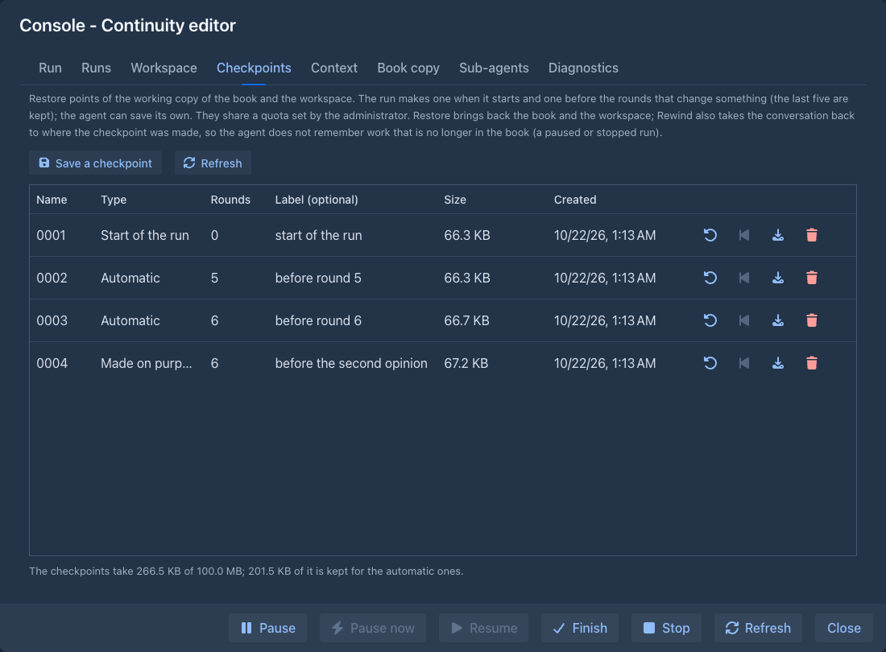
All the checkpoints of a run share a quota that the administrator sets in the permission (100 MB when empty). Part of it is kept for the automatic ones, so that the agent can't use it all up; a checkpoint made on purpose that does not fit is refused, nothing is deleted behind the back of whoever asked. The agent then gets the list and deletes what it does not need (not the checkpoint of the start, and not the newest one); you can delete any in the tab. Each is an archive (a ZIP of the book as JSON, the pairs and the workspace files) you can download.
Restore makes the working copy again from the checkpoint: it is a new copy, the old one is deleted, the workspace is the saved one (files written after it are gone) and the handles of the agent for the items that were there still work. The state before is saved as an automatic checkpoint first, if there is room, so a restore can be taken back. A restore takes about as long as the start of a run (half a minute for a book of two thousand parts). You can restore while the agent does not work; the agent restores itself between two rounds and is told what came back. The checkpoints go when the run lets go of its copy.
Rewind is a restore that also takes the conversation back. A restore alone leaves the agent remembering work that is no longer in the book, so a run you want to send in another direction needs a rewind: the working copy and the workspace go back to the checkpoint, the messages after the place where the checkpoint was made are greyed in the transcript (you can still read them, and the export has them) and the agent no longer reads them, and a notice tells the agent what happened, so it does the work again if it is still needed. The run has to be paused or stopped (pause an agent that waits for you first); you Resume it afterwards and it goes on from the notice. A checkpoint can only be rewound to while its place in the conversation is still part of it: after a rewind to an earlier checkpoint the later ones (of the conversation that was undone) can only be restored. A checkpoint made before the rewind existed does not know its place and can only be restored. What a compaction did after the checkpoint is undone with the rewind; the agent reads the messages the compaction had replaced again.
Going back to a message. You do not have to pick a checkpoint: every message you wrote to the agent has a Rewind button under it in the transcript of the Run tab. It takes the conversation back to before that message: the agent forgets the message and everything after it, and the working copy and the workspace go back to the newest checkpoint that was made before it (the runner makes one before every round that changes something, so this is usually right at the message). The state of a run is only known at its checkpoints, so when the closest one is older than the message, the messages between that checkpoint and yours are forgotten too; the confirmation tells which checkpoint it is and how many messages go. The forgotten messages stay in the transcript, greyed. The button works while the agent waits for you (it is paused for it), is paused, or was stopped and kept; while the agent works it is disabled. You Resume the run afterwards, and it goes on from the notice.
Creating and editing an agent
New agent opens the same window as Edit:
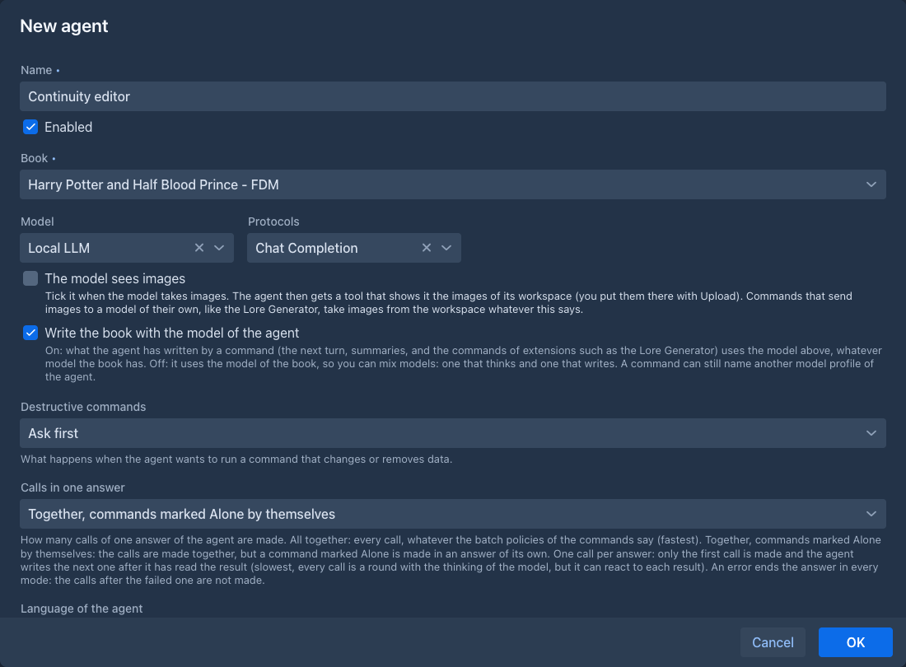
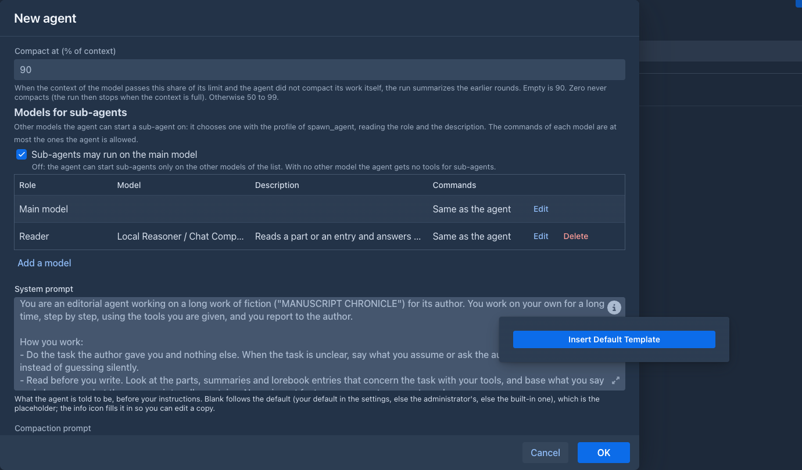
Allowed commands
The agent is offered only the commands you tick. The table lists every command with its effect (Destructive changes or removes
data, Non-destructive only reads or adds). The Selection box ticks many at once: All, None or All non-destructive
(the default for a new agent), or a role; ticking a command yourself makes the selection Custom. The Search commands field above the table shows only the commands that have all the words you type (in any order, in the name or the description); the selection still applies to all commands, also the hidden ones. Commands that an extension brings stay allowed
when the extension is not loaded, you just don't see them. The Batch column says whether the command is used Together with other calls in one answer or Alone (a command that makes a call to a model, such as next, swipe, regenerate, redraft-part, generate-annotation or the compaction, is alone; see Calls in one answer below). All the columns can be resized. The Tokens column is what the definition of the command (its name, description and parameters) adds to every request of the agent, and
the line under the instructions adds up the ticked ones: the whole set is about 20 000 tokens, so a smaller selection (a role) leaves more room in the context for the work.
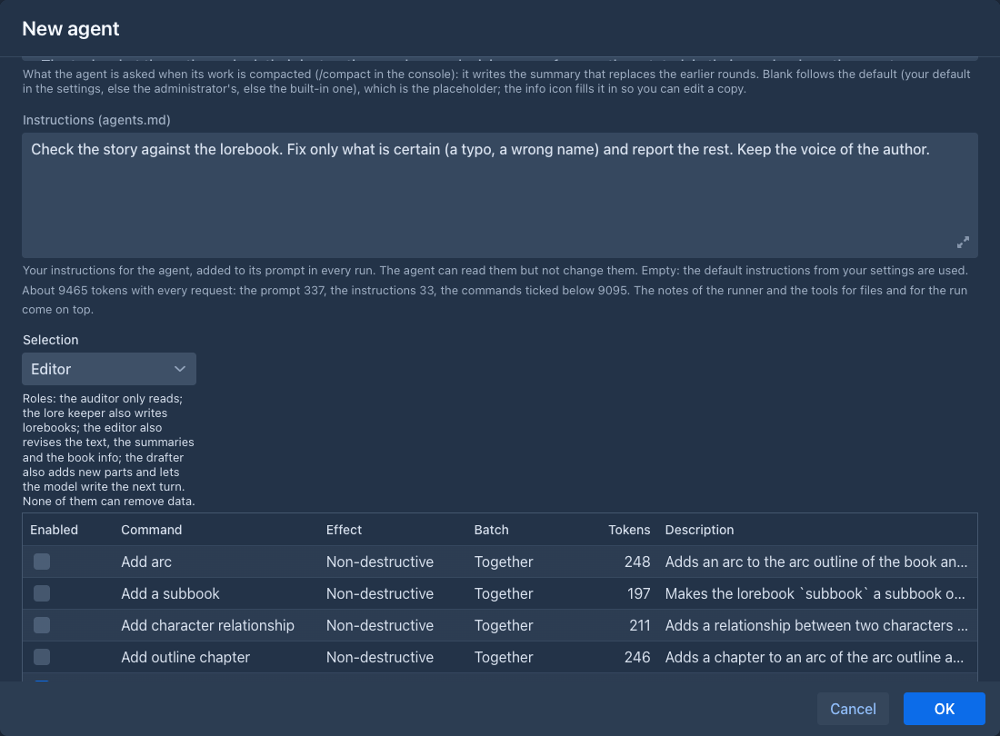
The roles are sets of commands for a job. All of them can read the book and the lorebooks (every command that only reads, those of extensions too), and none can remove data:
Every command ticked adds its definition to every request, so a role is also the cheapest way to a small prompt for a weak model.
On a phone
The phone layout has an Agents tab in the drawer, for users who may use agents, with the count of the agents that need you beside its name. Each agent is a card with its name, its state and the buttons of the table (they wrap onto more lines). The windows - the console, the review, the agent's settings - fill the screen, and the review shows the table above the detail of the item. Everything works as on the desktop, only smaller. The console is laid out for a thumb:
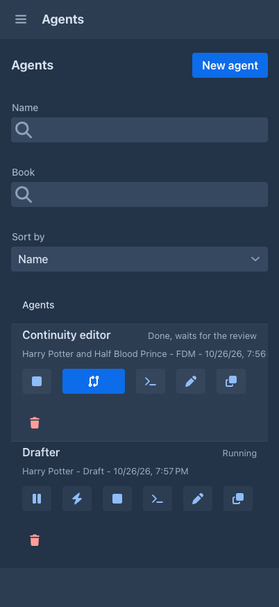
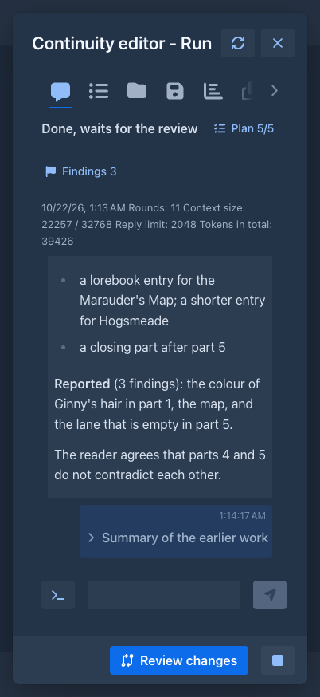
-
Tabs are icons (run, runs, workspace, checkpoints, context, book copy, sub-agents, diagnostics); the title of the window names the one that is open.
-
Pause, Pause now, Resume, Finish and Stop are icon buttons at the bottom, and only the ones that can be used now are shown; Review changes keeps its words, it is what a finished run waits for. Refresh and Close are icons in the header.
-
The message box is one line with the Send and Attach image icons beside it. The command line (the terminal icon) is hidden until you open it, so the keyboard does not cover the transcript for nothing. The messages of the transcript use the whole width.
-
Tables are lists of cards: a run, a checkpoint, a command of the agent's settings, an item of the review each show their name and state with the details under it and their buttons below, in place of columns. The files of the workspace show their size under the name, and the toolbar of the workspace is icons. The context table keeps the number, name and tokens; the type and share of a part are under the text of the part you pick.
-
The top bar shows who waits for you. While the drawer is closed, a red number in the top bar (next to the title of the open part) counts the agents that need you, as the badge on the Agents tab does in the drawer; tap it to go to the Agents tab. It is hidden when nobody waits, while the drawer is open and in the Agents tab itself.
-
Swipe between the parts. A swipe sideways over the content goes to the next part of the drawer (swipe to the left) or the previous one (to the right). It does nothing with the drawer open or while the application locks the navigation, and a touch that starts in a text field, a table or anything that scrolls sideways is left to it.
For long work with the transcript or the review a larger screen is still more comfortable.
Cloning
Clone asks for a name and a book that has no agent, and copies the definition of the agent and its files (not its runs) to a new agent of that book. You can have as many agents, clones included, as your administrator allows (five unless they set another number); at the limit New agent and Clone are off and say why.
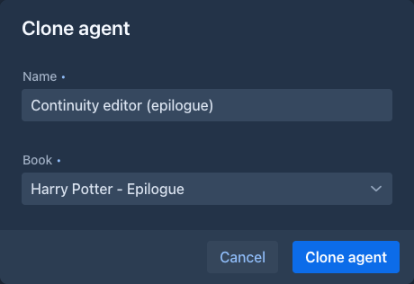
The book is locked
While a run of an agent works or waits for you, its book is locked: you can read it, but nothing changes it, so the agent never works on text that moves under it. The book list does not open a locked book, it tells you which agent holds it, and generating, editing, search and replace, summaries and deleting the book are refused. Pause or Stop the run to edit the book again; a paused, stopped or finished run does not lock it.
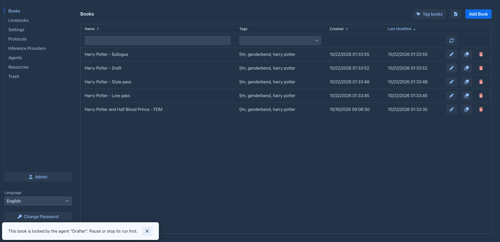
The lorebooks of the book are locked with it: the lorebook the book uses and its sub-lorebooks. On the Lorebooks tab such a lorebook is shown the way it is on a phone, as plain text and without any editing, with a note that says which agent holds it; Refresh shows it for editing again after you paused or stopped the run. Other lorebooks are not affected.
Agents and folders
A book in a folder that an agent works on keeps its place and its settings: moving or deleting a folder above it, and changing a setting such a folder passes down (language, templates, point of view, tense, style, prompts), is refused with the name of the book and the agent. Renaming a folder, or changing its description, is not refused. A paused, stopped or finished run lets go.
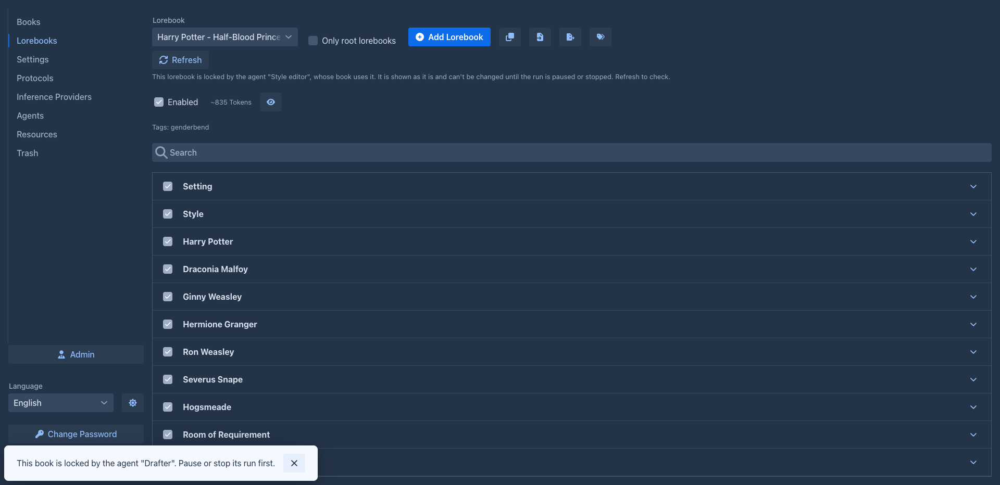